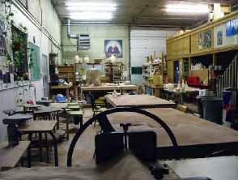
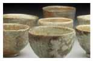
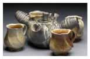
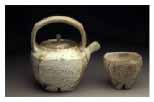
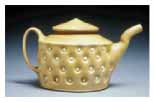

International Cup
/ Potsketch
The
Clay Studio of Missoula is a non-profit facility nestled
in the mountainous region of Montana USA. Five students, who
graduated from the University of Montana, established the facility
eight years ago 'to expand and further develop the explorations
of clay'. They set up children and adult classes in order to
generate funds to acquire equipment and pay the rent.
The Clay Studio of Missoula's goals are to provide a quality
work environment for all levels of clay artists made affordable
through group sharing, to provide high level personal instruction
for those starting out or those with particular inquiry, and
to offer work space for the more mature artist who may not be
able to afford the high costs of a private studio.
Four years ago Jayson Lawfer was brought on board as the Executive
Director. During that time Jayson established an artist-in-residence
program, an internship with the local university, built
an internationally known exhibition space, and set up many workshops
and juried shows.


INTERNATIONAL CUP
– Application must be RECEIVED no later than April 20,
2006
– Notification will be mailed May 10, 2006
– Exhibition dates: June 22– July 22, 2006
ELIGIBILITY
– Open to artists worldwide
– Size may not exceed 20 inches or 15 lbs.
– Work must be made primarily of clay
RULES
– Can enter up to two pieces
– All exhibited work must be for sale
– Work which differs from the submitted slides will be
disquali.ed
– Non adherence to rules may be cause for disquali.cation
ENTRY FEE
– $20 for 1 entry
– $25 for 2 entries
COMMISSION
– 40% commission will be charged on all sales
FREIGHT AND INSURANCE
– The artist is responsible for freight and insurance
on
the work to and from Missoula, MT. The organizers are
responsible for insurance during the exhibition
IMAGE REQUIREMENTS (SLIDES OR DIGITAL)
– Slides must be 35mm color in cardboard or plastic mounts
– Label each slide with: